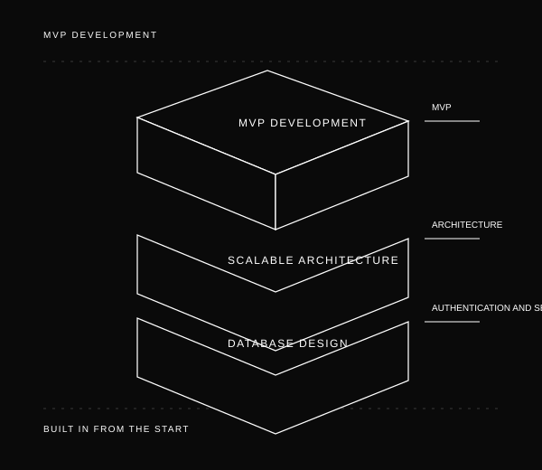
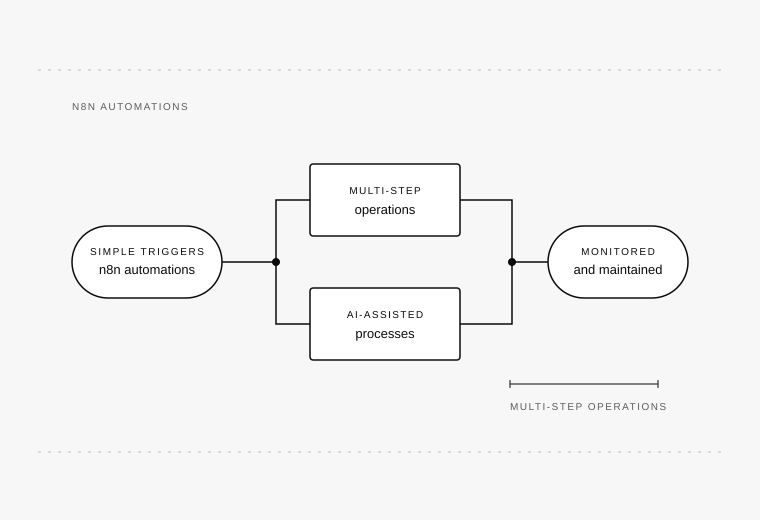
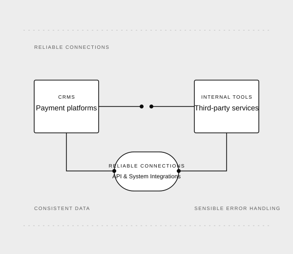

Website Development
A website that loads fast, ranks well and turns visitors into enquiries. Performance-first builds, technical SEO foundations and conversion-focused structure, responsive on every device.
Website Development
Software engineeringBuilt with intent
Websites, SaaS products, automations and integrations, designed on sound architecture and built to scale.
CAPSTACK is a software engineering company for startups and growing businesses that want technology to hold up past launch day. Tell us what you need and we'll show you how we'd engineer it.
Introduction
Most rebuilds, delays and workarounds trace back to decisions nobody made early enough.
Money spent twice. Features built without a plan get rebuilt.
Tools that don't talk. Teams re-enter the same data across disconnected systems.

Experiences that lose people. Slow pages, confusing flows and unclear next steps cost enquiries and customers.

Limits hit too early. A foundation not built to grow forces a rebuild.

Each of these is decided early. That's where we start.
Start with one, or combine them. They're designed to fit together.
A website that loads fast, ranks well and turns visitors into enquiries. Performance-first builds, technical SEO foundations and conversion-focused structure, responsive on every device.
Website Development
A working product in your first users' hands, on a foundation that won't need rebuilding. MVP development with scalable architecture, sound database design, and authentication and security built in from the start.
SaaS & Product Development
Fewer manual tasks, fewer errors and more time for work that matters. n8n automations from simple triggers to multi-step operations, including AI-assisted processes, designed to be monitored and maintained.
Workflow Automation
One connected system instead of a stack of disconnected tools. Reliable connections between CRMs, payment platforms, internal tools and third-party services, with sensible error handling and consistent data.
API & System Integrations
Featured Work
Client projects, internal products and engineering experiments, each shown with the problem, the approach and what was built.
[PENDING: OWNER INPUT] No project entries are written. Supply any client projects, internal products or experiments cleared for publication (name, problem, services, what was built, any verifiable outcome) and this section will be populated. Until then, ship this section as a heading plus the three type labels, or hold it back.
See Our Work05 / Engineering Approach
These are settled before development starts, because they're the hardest to change afterwards.
We define the system structure, data model and integration points first, so growth doesn't mean rework.
Authentication, data handling and input validation are planned from the first design stage, not added at the end.
Speed and technical SEO are set as targets from the start, not tuned after launch.
Complexity has to earn its place. Fewer moving parts mean lower cost and easier maintenance.
06 / Why CAPSTACK
An engineering-led partner for businesses that want reliable, scalable and long-term solutions.
Scope is defined before work begins, so you know what you're paying for and why.
Security is part of the design, not a final checklist.
Fast, responsive builds that support search visibility and keep visitors engaged.
Designed and engineered for your business, not adapted from a generic template.
Clean, structured code that your next developer can read and extend.
Launch isn't the finish line. Support and improvement continue afterwards.
Development Process
Five stages, a defined deliverable at each one, and a review point before we move on.
Discover. We map your goals, users and constraints. You receive: a written scope summary.
Scope summary →Architect. We design the system, choose the stack and set the security approach. You receive: an architecture overview and milestone plan.
Architecture plan →Build. Development in stages with regular updates. You receive: progress updates and working previews.
Working previews →Launch. Testing, optimization and deployment. You receive: a pre-launch checklist and your sign-off.
Launch checklist →Support. Maintenance and continued improvement after launch.
Ongoing support →Websites, SaaS products (starting with MVPs), workflow automations using n8n, and API and system integrations. They can be commissioned separately or combined.
No. Tell us the problem and what you want to achieve. Defining the scope is the first stage of our process.
Every project is scoped before work begins, and the quote reflects that scope. Because projects vary widely, we don't publish fixed prices. Get in touch and we'll scope yours.
No. We build to your requirements, designed and engineered for your business rather than adapted from a generic template.
You do. You own the code we build for you. [TERMS PENDING: confirm ownership timing and any exceptions before publishing detail.]
Yes. Support and maintenance are available after launch. [TERMS PENDING: scope, pricing and response times.]
Often, yes. Integrations are part of what we do, and we assess how your current tools can be connected during the discovery stage.
Yes. For product work we begin with an MVP, built on a foundation designed to grow so it doesn't need rebuilding later.
It depends on scope. We give a timeline once the scope is defined, rather than promising one up front.
We're based in Chennai, India, and work with clients in India and worldwide.
Start a Project
Share the idea, the problem or the system that isn't working. We'll show you how we'd engineer it.
Start a ProjectNo complete specification required to get started.